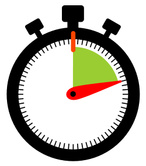
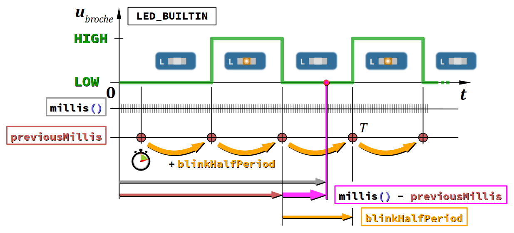

Le temps est une composante essentielle en programmation. Tout logiciel doit prend en compte des aspects temporels, ne serait-ce que pour détecter un double‑clic. C'est tout particulièrement le cas des programmes de contrôle‑commande de systèmes : ils doivent cadencer certaines actions avec des durées spécifiées.
Pour les programmes sur ordinateur, le langage C met à disposition du codeur le module time de la bibliothèque standard (fichier d'en‑tête time.h , ctime pour le C++). Ce module comprend de nombreuses fonctions, qui permettent notamment d'accéder aux variables d'horloge :
- Celles du processeur (éventuellement généré par un circuit oscillant externe) donnent ce qu'on appelle le temps processeur, défini par un nombre de « tics » d'horloge écoulé entre deux instants considérés. Sachant la période d'oscillation, on peut calculer des valeurs de durées très précises.
- Celles du système d'exploitation donnent ce qu'on appelle le temps calendaire, défini par le nombre de secondes écoulées depuis une date de référence – on parle de timestamp. Et il peut être formulé aussi en heures‑minutes‑secondes et jour‑mois‑année pour un usage pratique.
Bien entendu, on peut mémoriser ces variables d'horloge et d'effectuer toutes sortes de calculs. Ces aspects seront étudiés ultérieurement (notamment dans le module de formation aux réseaux – cf. chap. R2‑VIII R). Ils requièrent d'avoir déjà vu les structures de données hétérogènes, lesquelles sont abordées seulement dans la partie C5 du cours.
Sur une carte à microcontrôleur, même si elle est équipée d'un module RTC (real‑time clock) – ou encore d'un module de connexion réseau pour obtenir le temps Internet – les possibilités sont un peu moindres. S'il y a bien une horloge processeur, il n'y a pas de système d'exploitation, donc pas de temps calendaire. Il faut donc le « simuler » dans le programme, ce qui est possible via l'utilisation d'une bibliothèque de fonctions appropriée, comme celle dont le fichier d'en‑tête est Time.h A du framework Arduino, dont l'identificateur se code avec une majuscule initiale (donc, à ne pas confondre avec celui de la bibliothèque standard du langage C, mentionné supra).
Néanmoins, même sans module RTC ni temps Internet, dans le cas des cartes Arduino, on dispose déjà de quelques fonctions basiques de haut niveau pour gérer les aspects temporels :
- les fonctions
delayetdelayMicrosecondde mise en pause de l'exécution du programme ; - les fonctions
millisetmicrosde mesure du temps écoulé depuis le début de l'exécution du programme.
L'objectif de ce chapitre est de passer en revue ces quatre fonctions dont l'usage est absolument indispensable pour la programmation des cartes Arduino et compatibles.
Quant à leur code source, il est consultable dans le fichier Arduino wiring.c G. Toutefois, il est complexe et difficile à comprendre, même pour un étudiant motivé, car il fait appel à des macro‑définitions spécifiques au microcontrôleur employé (notamment avr/interrup.h pour un microcontrôleur à cœur AVR).
Pauses d'exécution
Syntaxe
On code une pause d'exécution du programme par une instruction d'appel d'une des deux fonctions Arduino, de la forme :
où la durée de pause est spécifiée par une expression à valeurs entières de type unsigned long (allant de 0 à environ 4,3 milliards), respectivement en millisecondes (ms) et microsecondes (µs).
Ces fonctions sont de type void : elles ne retournent aucune valeur.
En d'autres termes, lors du traitement d'un appel de l'une de ces fonctions, l'instruction suivante n'est exécutée qu'après expiration de la pause programmée.
Durant cette pause, aucune autre instruction du programme ne peut donc être exécutée. L'exécution de ce dernier est comme « suspendue ».
Lors d'une pause programmée par un appel d'une des deux fonctions ci‑dessus, le microcontrôleur lui‑même n'est pas mis en pause. En effet, il reste réceptif aux interruptions : celles déclenchée par un signal reset, par un événement survenant sur une liaison série du microcontrôleur, ou celles codées par le programmeur (le codage des interruptions n'est pas abordé dans ce module de formation).
Exemples d'application
- Dans un programme de démonstration classique de clignotement (en anglais, blink) de la led intégrée à une carte Arduino, on code deux pauses : cf. les lignes nº 9 et 11.
- Dans un programme Arduino qui ne comporte aucune pause ni instruction longue à traiter, le temps d'itération de la fonction
loopest extrêmement court (quelques microsecondes). Dans l'environnement de simulation Tinkercad sur un ordinateur peu performant, il se produit alors un trop grand nombre d'itérations par seconde pour que l'exécution se déroule en temps réel sur la page web : on observe une simulation ralentie, le chronomètre affichant de temps en temps des millièmes de secondes.
const int ledPin = LED_BUILTIN;
const unsigned blinkHalfPeriod = 1000; // = 1 s
void setup() {
pinMode(ledPin, OUTPUT);
}
void loop() {
digitalWrite(ledPin, LOW);
delay(blinkHalfPeriod); // pause 1 sec
digitalWrite(ledPin, HIGH);
delay(blinkHalfPeriod); // pause 1 sec
}
blinkHalfPeriod car elle correspond à la demi‑période de clignotement. LED_BUILTIN un signal carré (rapport cyclique α = 50 %) de période T = 2 s. (cf. le chronogramme ci‑dessus). loop dure exactement une période T de clignotement. loop une pause artificielle de quelques millisecondes. delay(10); // for a quicker Tinkercad simulation } // end of loop
Inconvénient
Très simple d'emploi, les fonctions delay et delayMicrosecond présentent néanmoins un inconvénient majeur : elles impactent la réactivité du programme, au sens où ce dernier peut ne plus être en mesure de détecter l'occurrence de certains événements.
L'impact est d'autant plus sévère que la durée de pause est longue.
En règle générale, le manque de réactivité d'un programme pose un problème s'il pilote un système temps réel W, au sens où il doit prendre en compte sans délai des événements qui peuvent survenir à tout instant de façon non prévisible : appui sur un bouton, déclenchement d'un capteur, variation d'une consigne, etc. Au maximum, la durée d'exécution de la fonction loop ne doit pas dépasser environ 20 ms. Et sur certains systèmes soumis à des contraintes de sécurité élevée (véhicules, machines‑outils, etc.), cette valeur peut être bien plus réduite.
Sinon, lorsqu'un événement important se produit alors que le microcontrôleur est en pause, il n'est pas pas immédiatement détecté, voire pas du tout si la durée de cet événement est inférieure à celle de la pause ! Un tel manque de réactivité est en général inacceptable au regard du cahier des charges du système.
Dans l'exemple du programme de clignotement supra utilisant la fonction delay, les deux pauses font 1 seconde chacune et la durée d'une itération de la fonction loop durent donc 2 secondes ! Si l'on voulait employer un bouton‑poussoir pour commander la marche ou l'arrêt du clignotement, un appui ne serait détecté à coup sûr que s'il durait plus d'une seconde, ce qui n'est pas satisfaisant en termes d'ergonomie. L'utilisateur serait obligé d'appuyer éventuellement plusieurs fois sur le bouton pour que sa décision soit prise en compte.
Heureusement, il existe d'autres solutions algorithmiques pour coder la durée d'une action : elles utilisent les fonctions de mesure du temps écoulé.
Mesure du temps écoulé
Syntaxe
Pour déterminer le temps écoulé depuis l'instant zéro d'exécution du programme, on code des expressions appelant des fonctions Arduino de la forme :
-
millis()pour obtenir une valeur exprimée en millisecondes (ms) A ; -
micros()pour obtenir une valeur exprimée en microsecondes (µs) A.
Les fonctions millis et micros sont sans argument. Elles retournent l'une comme l'autre des valeurs de type unsigned long.
L'instant zéro du programme est celui du début d'excution de son point d'entrée (première instruction codée dans la fonction setup – cf. chap. C2‑I ) après la dernière (ré‑)initialisation.
Tout appel d'une fonction millis ou micros agit en quelque sorte comme la consultation d'un chronomètre. S'il est codé dans la fonction loop, chaque évaluation d'un tel appel retourne donc une valeur supérieure à la précédente, qui témoigne de l'écoulement unidirectionnel et irréversible du temps.
Au cours de l'exécution du programme, il est bien évidemment « impossible d'arrêter ce chronomètre ». Techniquement, on ne peut tout simplement pas coder une modification de la valeur retournée par millis ou micros puisque, comme pour toute fonction, la valeur retournée n'est pas une l‑value (cf. chap. C2‑IV ). La seule chose que l'on puisse faire, c'est « remettre à zéro le chronomètre » en réinitialisant le programme (cf. chap. C1‑III ).
En revanche, il est tout à fait possible de mémoriser la valeur retournée par la fonction millis (ou micros) dans une variable spécialement déclarée de type unsigned long, typiquement nommée previousMillis. Il suffit simplement de coder une affectation comme :
previousMillis = millis();
ce qui revient par analogie à appuyer sur le bouton de temps intermédiaire du chronomètre.
Par la suite, on peut alors calculer la différence :
millis() - previousMillis
pour déterminer le temps écoulé depuis la dernière mémorisation de la valeur de millis stockée dans previousMillis.
Dans le framework Arduino, les valeurs de type unsigned long s'étendent de 0 à 4 294 967 295 donc :
- la valeur retournée par la fonction
millisrepart à O au bout de 49 jours et 17 heures environ ; - la valeur retournée par la fonction
microsrepart à 0 au bout de 1 heure, 11 minutes et 35 secondes environ.
On verra néanmoins que ces rebouclages par débordement d'entier (integer overflow) ne posent pas de problème lorsque l'on effectue des tests de différence comme ci‑après (cf. chap. C3‑II ).
Exemple d'application
Reprenons à partir de la ligne nº 8 le programme de clignotement de la led intégrée proposé supra. Pour coder une version réactive, c'est‑à‑dire sans recourir à la fonction delay :
- On commence par déclarer une variable globale qu'on nomme
previousMillis. De façon un peu plus complexe que supra, cette variable sera : - d'être initialisée à la valeur retournée par la fonction
millisjuste avant la première itération de la fonctionloop; - puis périodiquement incrémentée de la valeur de constante
blinkHalfPeriodà chaque changement d'état de la led pour servir de référence temporelle au clignotement. - Ensuite, au début de la fonction
loop, on teste la différence :
millis() - previousMillis
car à chaque nouvelle itération deloop, la valeur retournée par la fonctionmillisaugmente alors quepreviousMillisgarde la même valeur, donc la différence s'accroît. - Si cette différence est égale – voire supérieure – à la demi‑période de clignotement
blinkHalfPeriod, alors on effectue : - l'incrémentation de
previousMillispour définir la nouvelle référence temporelle :
previousMillis += blinkHalfPeriod; - l'inversion de niveau logique de la sortie
ledPin(déclarée égale àLED_BUILTIN) :
digitalWrite(ledPin, !digitalRead(ledPin));
qui provoque un changement d'état de la led
D'où le code ci‑dessous :
const int ledPin = LED_BUILTIN;
const unsigned blinkHalfPeriod = 1000; // = 1 s
void setup() {
pinMode(ledPin, OUTPUT);
}
unsigned long previousMillis = millis();
void loop() {
if (millis() - previousMillis >= blinkHalfPeriod) {
previousMillis += blinkHalfPeriod;
digitalWrite(ledPin, !digitalRead(ledPin));
}
delay(10); // only for a quicker Tinkercad simulation
}
par lequel on obtient le même chronogramme qu'avec la solution non réactive présentée supra :
 À titre de comparaison, la durée d'exécution d'une itération de la fonction loop est maintenant très courte (quelques microsecondes si l'on supprime l'instruction de la ligne nº 15 spécifique pour la simulation avec Tinkercad). Ainsi, toute instruction rajoutée dans cette fonction serait être traitée dans les meilleurs délais.
- La déclaration de la variable
previousMillisn'est pas codée :
unsigned long previousMillis = 0; // initial offset not taken into account
mais codée :
unsigned long previousMillis = millis();
En effet, il peut s'être déjà écoulé plusieurs millisecondes depuis le début du programme, nécessaires à l'exécution des instructions de la fonctionsetup(en particulier si le moniteur série est employé). On initialise donc la variablepreviousMillisavec la valeur courante retournée par la fonctionmillispour que la durée du temps bas de la première période de clignotement ne soit pas anormalement courte au premier cycle. - La mise à jour de la variable
previousMillisn'est pas codée :
previousMillis = millis(); // may be subject to driftingmais codée :
previousMillis += blinkHalfPeriod;(c'est‑à‑direpreviousMillis = previousMillis + blinkHalfPeriod) car il se peut qu'au moment du test, la différence :
millis() - previousMillis
soit supérieure de quelques millisecondes à la valeur de la constanteblinkHalfPeriod, en particulier si la fonctionloopcomprend des instructions chronophages. Le fait d'incrémenterpreviousMillisde la valeur constanteblinkHalfPeriodgarantit l'absence de dérive dans le temps du signal de clignotement, que l'on souhaite le plus périodique possible. - L'instruction de clignotement :
digitalWrite(ledPin, !digitalRead(ledPin));concise le codage comme expliqué au chap. C2‑VII (remarque B).